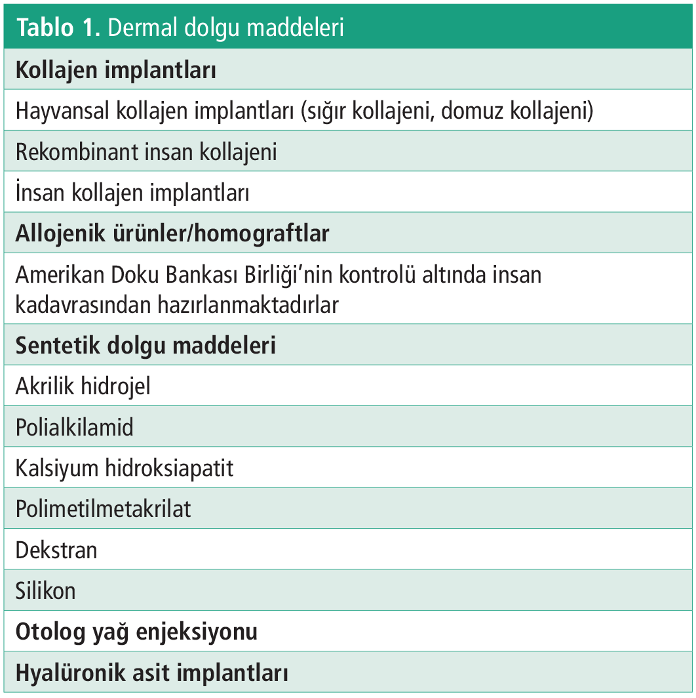
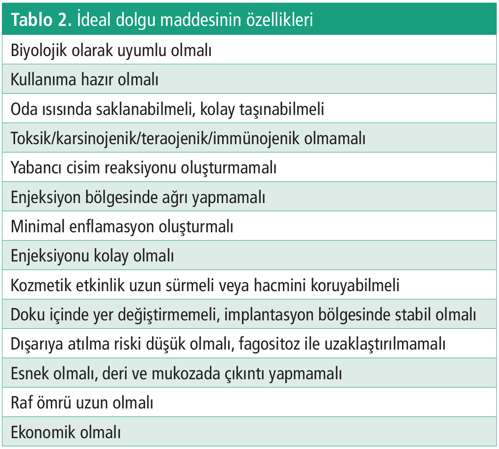
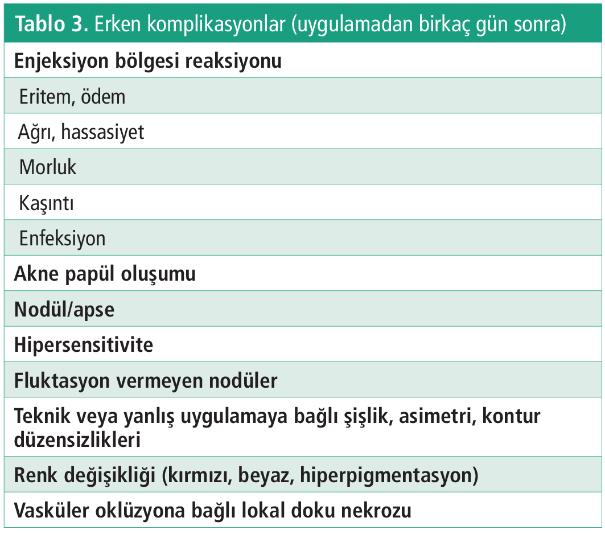
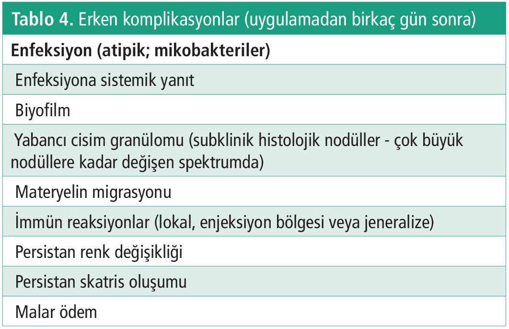
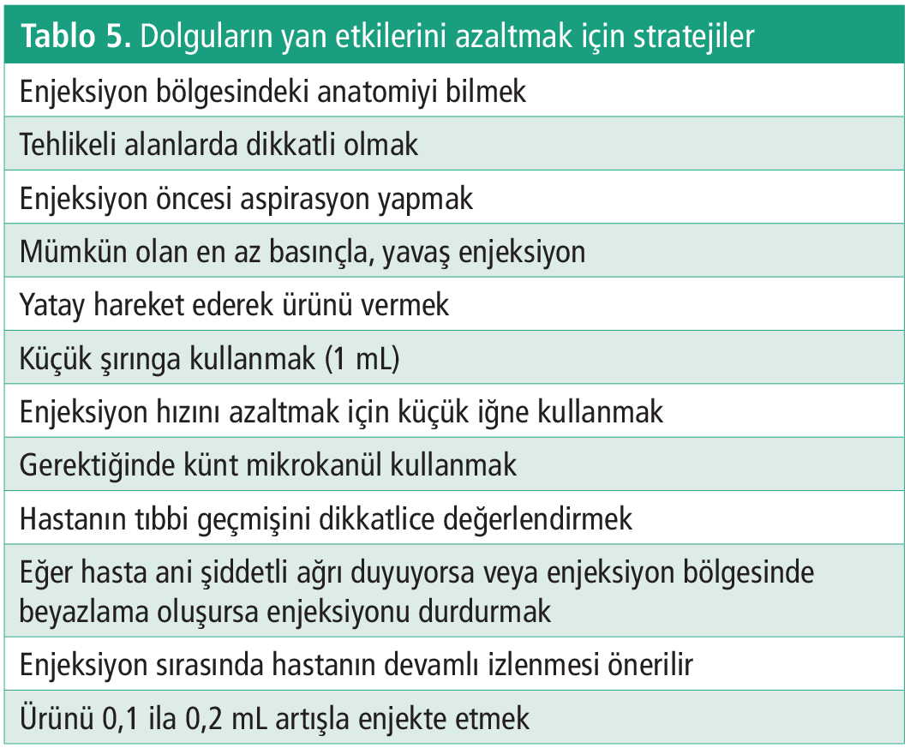

Derleme
Dermatolojide Dolgu Uygulamaları ve Komplikasyonları
1 İstanbul Üniversitesi-Cerrahpaşa, Cerrahpaşa Tıp Fakültesi Deri ve Zührevi Hastalıkları Anabilim Dalı, İstanbul, Türkiye
Anahtar Kelimeler: Kozmetik uygulamakomplikasyondolgu uygulamasıestetik
Keywords: Cosmetic procedurecomplicationfiller applicationesthetics
Geliş: 23.07.2019Kabul: 23.09.2019Yayın: 24.12.2020
s. 14-20
Özet
ÖZET
Dolgu enjeksiyonları, çeşitli dolgu maddelerinin dermise yerleştirilmesi işlemidir. Enjeksiyon uygulanacak lokalizasyona göre doğru ürünün seçilmesi, kullanılan enjeksiyon tekniği, uygun hasta seçimi ve hastanın beklentileri, hekimin deneyimi, birlikte uygulanan botulinum toksini enjeksiyonu, lazer, kimyasal soyma gibi işlemler dolgu işleminde kozmetik sonucu etkilemektedir. Dolgu ürünleri oldukça güvenli ürünler olmasına karşın, uygulamanın yapıldığı kişiye, dolgunun yapıldığı yere, ürüne ya da uygulama tekniğine bağlı olarak çeşitli yan etki ve komplikasyonlar oluşabilmektedir. Oluşabilecek komplikasyonları en aza indirmek amacıyla hastanın durumu, uygulanacak dolgu materyali ve uygulama tekniği en iyi şekilde değerlendirilmeli, kullanıcılar ürünler hakkında yeterli seviyede teorik bilgi ve uygulama becerisine sahip olmalıdır.
Tam Metin
Giriş
Derimizde doğal yaşlanma süreci boyunca subkütan yağ dokusu ve dermal destek dokusunda azalma olur; deri incelir ve elastikiyetini kaybeder. Yüz görünümünde bozuklukları belirir; yanaklar ve dudaklar dolgunluğunu kaybetmeye başlar; derin kışıklıklar, nazolabiyal kıvrımların belirginliği ve diğer istenmeyen deri kusurları ortaya çıkabilir. Günümüzde yüz estetiğinde, daha genç ve daha kusursuz görünmek amacıyla pek çok yöntem geliştirilmiştir. Bu yöntemlerden dermal dolgu maddesi enjeksiyonları, estetik cerrahi operasyonları tercih etmeyenler için alternatif oluşturmaktadır. Bazı olgularda cerrahi operasyonların geciktirilmesi için ya da cerrahiye ek tedavi olarak da dolgu uygulanabilir (1,2).
Dolgu enjeksiyonları, çeşitli dolgu maddelerinin dermise yerleştirilmesi işlemidir. Enjekte edilen materyal dermiste hacim oluşturarak çizgilerin ve kırışıklıkların yüzeyelleşmesini sağlar. Derideki statik kırışıklıklar için ideal bir tedavidir. Bu maddeler sadece kırışıklıkların giderilmesinde değil, bazı dermal depresyonların, travma ile oluşan sikatrislerin, yüz konturlarının düzeltilmesi ve deriyi nemlendirmek amacıyla da kullanılabilir (3).
Dolgu işleminde kozmetik sonucu etkileyen bazı önemli faktörler vardır. Bu faktörler enjeksiyon uygulanacak lokalizasyona göre doğru ürünün seçilmesi, kullanılan enjeksiyon tekniği, uygun hasta seçimi ve hastanın beklentileri, hekimin deneyimi, birlikte uygulanan botulinum toksini enjeksiyonu, lazer, kimyasal soyma gibi işlemlerdir (4).
Uygun dolgu seçiminde materyalin partikül boyutları, konsantrasyonu, kalıcılığı, yan etkileri ve geç komplikasyonları iyi değerlendirilmelidir. Küçük partiküllü ürünler ince çizgilerin (göz ve ağız çevresi çizgileri) tedavisinde yüzeyel dermise, büyük partiküllü ürünler ise daha derin çizgilerin (derin gülümseme çizgileri, nazolabiyal çizgiler gibi) tedavisinde orta dermise enjeksiyonu uygundur. Uygulama yapılacak bölgeye göre uygun ürün seçilmelidir. Bölge derisinin özellikleri; vaskülarizasyonu, kalınlığı, gerginliği, mekanik hareketleri, doku yüzeyi, çizgi ve/veya kırışıklığın derinliği önemlidir. Kalın iğneli (27G) yüksek viskoziteli ürünler büyük bir atrofik sikatris ya da nazolabiyal sulkusta uygun bir seçimdir. Göz çevresi ve ağız çevresi gibi ince, yüzeysel çizgilerin düzeltilmesinde, akışkanlığı fazla olan ürünler, ince uçlu iğnelerle (30G-33G) yüzeyel dermise enjekte edilmelidir. Çok yüzeyel yapılan dolgular yüzeyde renk değişimi şeklinde belli olurken, çok derine yapılanlar ise doku içinde kaybolabilir (1,2,4,5).
Hastanın yaşı, yaşam tarzı, alışkanlıkları (sigara içimi), beklentileri (talep ettiği düzelme), deri tipi ve elastikiyeti, tıbbi geçmişi (allerji öyküsü, kullandığı ilaçları) iyi değerlendirilmelidir. İşlem sonucundaki tahmin edilen düzelme iyi anlatılmalıdır. Deriye ait kontur bozukluğu ya da elastikiyet “germe testi” ile değerlendirilebilir. En iyi sonuçlar, uygulama yapılacak bölge iki parmak arasında gerildiğinde kırışıklık kayboluyorsa elde edilir (4,5).
Günümüzde dermal dolgular kalıcı, yarı kalıcı ve geçici (biyo-parçalanabilir) olabilirler. Kalıcı dolgular iki yıldan uzun süre kalıcıdır ve partiküllü dolgulardır. Silikon, polimetilmetakrilat, mikroküreler gibi ürünler bu gruba örneklerdir. Yarı kalıcı dolgular ince küçük parçacıklar ve mikrokürelerden oluşan sentetik ürünlerdir. Bir-iki yıl süreyle kalıcıdırlar. Bunlar arasında kalsiyum hidroksiapatit ve poli-L-laktik asit bulunur (3). Geçici biyo-parçalanabilir dolgular 1 yıldan az bir süre kalıcı olan ürünlerdir. Bu grupta kullanılan iki ürün kollajen ve hyalüronik asittir (HA). Dermal dolgu maddeleri tabloda özetlenmiştir (Tablo 1) (1,2).
Kollajen deri içine enjekte edilir ve yaşlanma süresince kaybedilen doğal kollajenin yerini alır. Sığır, domuz ve insan çeşitleri mevcuttur ancak sığır ve domuz çeşitleri hipersensivite reaksiyonuna neden olabilir. Günümüzde en çok kullanılan dermal dolgu maddeleri HA içeren ürünlerdir (1,5). HA dermiste doğal olarak bulunan polisakkarit yapısında temel bir bileşendir. Derinin hidrasyonunu sağlar, hacim kazandırır, yastık görevi yapar. Kollajenden farklı olarak tüm canlılarda aynı yapıya sahiptir, tür ya da doku spesifikliği göstermemektedir. Polisakkarit zincir içerisinde çapraz bağlamalar yaparak HA’nın stabilizasyonu sağlanır. Dermise enjekte edilirse, uygulama sonrasında kalıcılığı 6 ile 18 ay arasında devam eder. Dolgu maddesi olarak otolog yağ greftleri kullanılabilir. Yağ greftleri karın, bacak, diz veya gövde yan yüzden elde edilebilir (1,6,7). İdeal dolgu maddesinin özelikleri aşağıdaki tabloda özetlenmiştir (Tablo 2) (5).
Dolgu tedavisinde, farklı uygulama teknikleri bildirilmiştir. Enjeksiyon uygulayıcısının seçimine göre nokta/seri delme, tünel açma, yelpaze veya çapraz tarama teknikleri uygulanabilir (4).
Periorbital Bölge Dolgu Uygulamaları
Kaş Şekillendirme
Kaş kaldırmak için en iyi yöntem toksin enjeksiyonudur. Eğer kaşın lateral kısmını kaldırmak için toksin yeterli değilse dolgu enjeksiyonu eklenebilir. Kaş bölgesine dolgu enjeksiyonu yapılacaksa kaşın lateral bölümünün derinine (orbicularis oculi kasının altına) (subkütan ya da preperiostal alana) uygulama yapılmalıdır. Bu şekilde kaş vertikal olarak kaldırılır ve horizontal bir kaş projeksiyonu elde edilir. Supraorbital sinir hasarından kaçınılmalıdır. O nedenle enjeksiyon öncesi supraorbital delik palpe edilir ve yeri saptanır (8). Enjeksiyon iğne ya da kanül ile yapılabilir. Orta veya yüksek molekül ağırlıklı dolgu materyalleri kullanılabilir. Eğer dolgu miktarı fazla olursa göz kapağı ödemi, aşırı dolgun göz kapakları olabilir (9-11).
Üst Göz Kapağında Çukurlaşma
Üst göz kapağına dolgu uygulamaları yeni uygulanan bir tekniktir. Bazen blefaroplasti ameliyatlarından sonra yağ dokunun fazla miktarda alımına bağlı şekil bozuklukları olabilir (9,12). HA enjeksiyonu ile bu bölgede düzeltme yapılabilir ve bu bölgedeki HA kalıcılık süresi 2-4 yıldır. Önerilen, 1 ay içinde 2 ayrı seans uygulaması ile düşük molekül ağırlıklı HA kullanılmasıdır. Enjeksiyon subkütan planda ya da supraorbital rimin enferior kısmına uygulanabilir. Enjeksiyon sırasında supratroklear ve supraorbital arterlere dikkat edilmelidir. Kanül ile uygulama yapılabilir. En önemli komplikasyon göz kapağı ödemidir. Fazla miktarda dolgu kullanılması kaş bölgesinde ağırlık ve kötü estetik görünüme neden olur (12).
Gözyaşı Oluğu (Tear Trough) Deformitesi
Gözyaşı oluğu deformitesi, periorbital çukurun 1/3 medialinde kalan kısım olarak tanımlanır ve periorbital bölge yaşlanmasında ilk görülen bulgularından biridir. Alt göz kapağında koyu gölgelenme ile birliktedir, göz altında çökme görüntüsü nedeniyle kişiye yorgun bir ifade verir ve kapatıcı ile geçmez. Her zaman ileri yaşlarda görülmez. Bazen genç yaşlarda da görülür. Gözyaşı oluğu deformitesini dolgu uygulamaları ile düzeltmek mümkündür (13-15). Gözyaşı oluğu deformitesi için enfraorbital bölgede kas altına 30G iğne ya da 25-27G kanül kullanılarak derin lineer retrograd enjeksiyon, enfraorbital oluk boyunca seri nokta enjeksiyonları veya midpupiller hattın 1,5 cm altında giriş noktası belirlenerek bu noktadan oluğun medialine, oluğa vertikal yönde ve oluğun lateral bölümüne supraperiostal derinlikte nokta enjeksiyonlar yapılabilir. Gözyaşı oluğu deformitesinde düşük molekül ağırlıklı HA dolgular kullanılmalıdır (16).
Perioral Bölge Dolgu Uygulamaları
Perioral yaşlanma dermiste kollajen ve elastin liflerinin kaybı, kemik ve kaslarda atrofi şeklinde belirir. Bazı bireylerde; daha çok sigara tiryakileri ve üflemeli müzik aleti çalanlarda perioral çizgiler daha fazla görülür (17). Perioral bölgede ve nazolabiyal sulkusta en sık tercih edilen genellikle HA, kalsiyum hidroksiapatit içeren dolgulardır. Perioral bölgenin ince kırışıklıklarında ideal tedavi kombinasyon tedavisi olup botulinum toksini ve HA içeren dolgu uygulamasıdır. Bu bölgede aşırı düzeltmeden kaçınmak gerekir. Bu bölgedeki yüzeyel çizgilerin tedavisinde viskozitesi daha az yoğun olan dolgular kanülle veya iğne ile yüzeyel dermise uygulanır. Seri nokta, tünel veya yelpaze tekniği uygulanabilir (18,19).
Nazolabiyal Sulkusların Rejuvenasyonu
Nazolabiyal sulkusların rejuvenasyonunda derin ve yüzeyel uygulamalar bir arada yapılmaktadır. Orta yüzde pitozis olmasını önlemek amacıyla enjeksiyonların sulkusun medialine yapılması daha uygundur, ancak bu bölgede fasyal artere ve proksimal kısımda anguler artere özellikle dikkat etmek gerekmektedir. Orta yüze ve yanağa yapılan hacim artırıcı uygulamalardan sonra genellikle nazolabiyallere uygulama yapmaya gerek kalmamaktadır (20,21).
Dudak Rejuvenasyonu
Dudak rejuvenasyonunda önemli üç bölge vardır; vermilyon sınırı, kırmızı dudak bölgesi (dudak mukozası) ve filtrumlar. Kural olarak üst dudak alt dudağın %75-80’i kadar olması ideal ölçüdür. Dudağa hacim kazandırmak için dolgu submukozaya verilir. Aşırı hacim kazandırmak ördek dudağı görünümüne neden olabilir ve ince dudak hareketleri kaybolabilir. Dudak konturu için daha ince dolgular seçilir ve daha yüzeyel verilir. Vermilyon sınırına uygulama üst ve alt dudak köşelerinde yükselme sağlar. Filtrumlara enjeksiyon ile dudağın merkezi daha da belirgin hale getirilir. Uygulama sonrası masajla dolgu homojen bir şekilde dağıtılabilir. Lidokain içeren dolgular ile uygulama daha az ağrılı olmakla beraber sinir bloğu yapılarak da ağrısız uygulama yapılabilir. Bu bölgede komplikasyonlardan kaçınmak için fazla hacim verilmesinden ve derin dermal uygulamadan kaçınılmalıdır (22,23).
Dolgu Komplikasyonları
Dolgu ürünleri oldukça güvenli ürünler olmasına karşın, uygulamanın yapıldığı kişiye, dolgunun yapıldığı yere (anatomik bölge), ürüne ya da uygulama tekniğine bağlı olarak çeşitli yan etki ve komplikasyonlar oluşabilmektedir. Dolgu maddeleri uygulamasında karşılaşılan bu komplikasyonlar klinik tablonun şiddetine göre (hafif, ciddi), ortaya çıkış zamanına göre (erken dönem, geç dönem), nedenlerine göre çeşitli şekillerde sınıflandırılabilir (Tablo 3,4) (24).
Ekimoz
Bütün dermal dolgularda ekimoz oluşma riski vardır. Kollajen içeren dolgular trombosit aktivasyonunu uyardıkları için HA’ya göre daha az ekimoz yaparlar. Oluşan ekimoz uygulama sonrası da hemen soğuk kompres uygulaması ve K vitamini kremleri ile tedavi edilebilir. Kalıcı lekelenme olursa pigment spesifik lazerlerle tedavi edilebilir (24). Ekimoz oluşumunu azaltmak için uygulamadan 1 hafta önce kan viskozitesini azaltan aspirin, varfarin, dipiridamol, klopidogrel, non-steroid anti-enflamatuvar, balık yağı, vitamin E, sarımsak tabletleri, gingko biloba ve ginseng içeren ilaçlar alınmamalıdır. Lidokain ve epinefrin içeren dolgu maddeleri enjeksiyon sonrası oluşan morluğu azaltabilir, epinefrin eozinofil aktivasyonunu baskılayıp vazokonstriksiyon yaparak morluk oluşumunu azaltır. Hastanın başı kalkık durumda iken işlem yapılmalıdır. Ayrıca ince uçlu iğnelerin kullanılması, enjeksiyonun yavaş yapılması, künt uçlu kanüllerin kullanılması, iğne giriş sayısının azaltılması morluk oluşumunu azaltan önlemlerdir (25,26).
Eritem
Enjeksiyondan hemen sonra deride hafif eritem görülmesi normaldir. Eğer eritem 5 günden fazla sürüyorsa hipersensitivite reaksiyonu akla gelmelidir. Kalıcı eritem için orta potent steroidler etkili olabilir. Lazer tedavisi ve vitamin K kremleri de eritemin tedavisinde kullanılabilir (25).
Kısa Süreli Post-travmatik Ödem
Uygulamanın hemen sonrasında geçici ödem oluşması normaldir ve hemen hemen tüm dolgularda olur. Uygulamanın hemen sonrasında ortaya çıkar, enjeksiyon volümüne ve tekniğine bağlıdır. Tedavi ve alınacak önlemler morarmadaki ile aynıdır. Post-enjeksiyon travmaya bağlı ödem 1 hafta içinde geriler (27).
Antikor Aracılı Ödem (Anjiyoödem)
Dolgu maddeleri yabancı maddeler olduğu için bazı hastalarda bu maddelere karşı hipersensitivite reaksiyonu gelişip IgE aracılı immün yanıt oluşabilir (Tip 1 hipersensitivite reaksiyonu). Uygulamadan saatler sonra ortaya çıkar. Enjeksiyon bölgesine sınırlı ya da yaygın olabilir. Ödem anti-histaminlere yanıt verir, daha uzun süreli ise sistemik prednizolon kullanılabilir. Ödemin enfeksiyöz orijinli olmadığından emin olunmalıdır (27).
Telenjiyektazi
Dermal enjeksiyon bölgesinde yeni kapiller oluşumu gözlenebilir. Uygulamadan haftalar sonra ortaya çıkar ve 3-12 ayda kaybolur. Bunlar doku travması ve ekspansiyonuna bağlı olarak ortaya çıkar (27).
Hiperpigmentasyon
Özellikle koyu tenlilerde uygulama sonrası post-enflamatuvar hiperpigmentasyon gelişebilir. Eğer pigmentasyon kalıcı ise topikal hidrokinon (%2-4), topikal retinoidler gibi renk açıcı ajanlar ve güneşten koruyucular önerilebilir.
Renk Değişikliği
Eğer partiküllü HA dolguları yüzeyel dermise veya epidermise enjekte edilirse Tyndall etkisi ile mavi renk değişikliği oluşabilir. Dermal dokunun kısıtlı olduğu bölgeler renk değişikliği açısından yüksek riskli bölgelerdir. Bunlar; nazal dorsum, dudaklar, göz altı olukları, periorbital ve perioral ince yüzeyel çizgilerdir. Kullanılan dolgu HA ise hyaluronidaz ilk tedavi seçeneğidir. Yüksek oranda çapraz bağ içeren veya partikül boyutu büyük olan HA dolgularında daha fazla sayıda hyaluronidaz enjeksiyonuna ihtiyaç vardır. Diğer bir yöntem iğne ya da ince uçlu bisturi ile insizyon yapıp dolgunun boşaltılmasıdır (27).
Allerjik Reaksiyon ve Hipersensitivite
Sığır kollajen enjeksiyonu nadiren allerjik reaksiyonlara neden olabilir. Eritem, ödem, indurasyon, kaşıntı ve ağrı gelişmesi hipersensitivite bulgusudur. HA dolguları genelde teste gereksinim duymazlar, eğer bunlara bağlı hipersensitivite reaksiyonu olursa hyaluronidaz enjeksiyonu ile tedavi edilebilir (27).
Nodüler Kitleler
Dolgu enjeksiyonlarına bağlı enflamatuvar ve non-enflamatuvar nodüller oluşabilir.
Non-enflamatuvar Nodüller
Uygulanan alanda teknik hatalar (aşırı düzeltme, dolgunun çok yüzeyel yapılması, uygun olmayan dolgu malzemesi seçimi) nedeni ile fazla miktarda materyal depolanmasına bağlı olarak ortaya çıkar. Enjeksiyondan hemen sonra ortaya çıktıkları için geç dönemde ortaya çıkan yabancı cisim granulomları veya biyofilmlerden ayırt edilebilir. Eğer HA uygulanmışsa bu nodüller hyaluronidaz ile eritilebilir. HA olmayan dolgularla erken dönemde ortaya çıkan nodüller masaj uygulaması ile gerileyebilir veya materyal çıkarılabilir. Dolgular lidokain, serum fizyolojik veya masaj uygulaması ile parçalanabilir. Bu şekilde gerilemeyen nodüllere az miktarda intralezyonel steroid enjeksiyonu yapılabilir. Dirençli olgularda 3 veya daha fazla sayıda 5-fluorouracil (5-FU) ve lidokain yapılabilir (27).
Enflamatuvar Nodüller
Biyofilmler, etrafı salgıladıkları polimerle çevrilmiş bakteri paketleridir. Dermis ya da subkütan dokuya madde enjekte edildiğinde bakteri ile kaplanıp biyofilm oluşturabilir. Bu bakteri topluluğu canlı dokulara bağlanır ve antibiyotiklere dirençli düşük seviyede kronik bir enfeksiyon oluşturur (28,29). Eğer biyofilmler travma veya yeni dolgu enjeksiyonu ile aktive olursa lokal, sistemik enfeksiyon ya da granülomatöz reaksiyona neden olabilir. Eğer enjeksiyon bölgesinde eritemli endüre alanlar ortaya çıkmışsa, süresine bakılmaksızın biyofilmden şüphe edilmelidir. Diğer tedavilerle iyileşmeyen ya da rezolüsyondan sonra rekürrens gösteren enflamatuvar nodüller biyofilmi işaret eder (30).
Genellikle kültür negatiftir. Biyofilmden şüpheleniliyorsa kültür negatif bile olsa geniş spektrumlu antibiyotik tedavisi ilk seçenektir (siprofloksasin 500 mg 2x1 ve klaritromisin 500 mg 2x1 4-6 hafta). Eğer biyofilmden şüphe ediliyora IL steroidlerden kaçınılmalıdır. Enjekte edilen maddenin çıkarılması, HA için hyaluronidaz kullanılması ve IL 5-FU diğer tedavi seçenekleridir. Son çare olarak cerrahi eksizyon düşünülebilir. Biyofilm oluşumunu azaltmak için enjeksiyon öncesi deri dezenfeksiyonu, oral veya nazal mukozadan enjeksiyon yapılmaması, var olan dolgu üzerine enjeksiyon yapılmaması ve dolgu sonrası ortaya çıkan enfeksiyonun etkili tedavisi gibi noktalara dikkat edilmelidir. Eğer nodül tedaviye dirençli ve giderek fibrotik bir hal alıyorsa yabancı cisim granülomundan şüphelenilmelidir (31).
Parestezi
Enjeksiyon sonrasında sinirlerin travmatize olması, dolgunun direkt olarak sinir içine yapılması, dokunun dolgu maddesi ile kompresyona uğraması sonucu oluşabilir. Motor hasarlar özellikle tehlike zonlarında agresif işlemler nedeniyle ortaya çıkar. Ancak sinir dağılım varyasyonlarının olabileceği de unutulmamalıdır. Tedavide düşük doz intralezyonel steroidler, materyelin lidokain veya serum fizyolojik ile parçalanması ya da nörotrofik etkisi olan vitamin B12, folik asit ve üridin monofosfat içeren ajanlar etkili olabilir.
Enfeksiyon
Dolgu uygulamasının herpes enfeksiyonlarını tetiklemesi olasıdır. Bu nedenle herpes öyküsü olan hastalarda dudak dolgusu öncesi profilaktik antiviral tedavi önerilmektedir. Dolgulama yapılacak bölgede aktif herpes lezyonu varsa bu lezyonlar tamamen kaybolana kadar beklenmelidir. Dolgu sonrası enfeksiyon ve kontaminasyon, uygulama uygun şartlarda yapıldığında nadiren ortaya çıkar. En sık olarak Staphylococcus aureus gibi deri ve yumuşak doku patojenleri etkendir. Enfeksiyondan şüphelenildiğinde hemen antibiyotik başlanmalı, eğer fluktuasyon varsa önce kültür yapılmalı, kültür sonucu gelene kadar da klaritromisin gibi bir antibiyotik ampirik olarak başlanmalıdır (32). Atipik ya da tüberküloz dışı mikobakteriler toprak ve suda sıklıkla bulunmaktadır. Bu organizmaların normalde patojenitesi düşüktür. Çok sık olmasa da kozmetik cerrahi işlemler sonrası bu bakterilerle enfeksiyonlara rastlanmaktadır. Eğer enfeksiyon bulguları 2 hafta sistemik antibiyotik kullanılmasına rağmen devam ediyorsa atipik mikobakterilerden şüphelenilmelidir. Muhtemel kaynak çeşme suyu ya da hastanın kendi yüz derisi olabilir (33).
Dolgunun Yer Değiştirmesi
Dolgu maddelerinin yer değiştirmesi hem dolgu maddesinin türüne hem de kullanılan tekniğe bağlıdır. Özellikle silikon ve kalsiyum hidroksiapatit gibi kalıcı dolgu maddeleri bu açıdan risk taşır. Kas aktivitesinin yoğun olduğu bölgelerde daha sık rastlanır. Hareket eden dolguların tedavisinde en basit yöntem küçük bir kesi ile çıkarılmasıdır. Hyaluronidaz enjeksiyonu HA için etkili bir çözümdür (25).
Nekroz
Enjeksiyona bağlı komplikasyon nadir ama ciddi bir komplikasyondur. Enjeksiyon bölgesinde bası ya da damarın obstrüksiyonuna bağlı kan akımının azalması ile ortaya çıkar. Vasküler komplikasyon sonucu nekroz gelişimi genellikle bölgenin kanlanmasının tek bir arteriyel dalla sağlandığı ve anastomozların az olduğu alanlarda gelişir. Bu bölgelerin başında glabella ve nazolabiyal sulkuslar gelir. Nekroz her tip dolgu ile görülebilir. Özellikle glabellar alanda, bu bölgenin altından geçen santral arterin blokajı oftalmik arterde embolizasyona ve görme kaybına neden olabilir.
Enjeksiyon sırasında ani şiddetli ağrı, renkte soluklaşma ve ardında viyole renk gelişimi vasküler oklüzyonun erken belirtileridir. Ardından erozyon ve ülserasyon oluşur (34). Eğer obstrüksiyondan şüphe ediliyorsa enjeksiyon hemen sonlandırılmalı, oluşan tıkacı dağıtmak için sert masaj yapılmalıdır. Bu dönemde masaj sonrası ortaya çıkan eritem damarın açıldığının önemli bir göstergesidir. Kalınlığı göz önüne alındığında kollajen dolguları HA göre masajla dağıtmak daha zordur. Lokal vazodilatasyon sağlamak amacı ile ılık kompres ve %2 nitrogliserin ile masaj uygulanabilir. Hiyaluronidaz enjeksiyonu HA dolgularına bağlı oklüzyonları açmak için kullanılabilir. Daha fazla kan akımı sağlamak için enoksoparin ve aspirin uygulanabilir. Sildenafil (100 mg) vazodilatasyon amacı ile kullanılabilir. Ciddi olgularda hiperbarik oksijen tedavisi nekroze dokuların kurtarılmasına yardım edebilir. Profilaktik antibiyotik ve antiviral tedavi başlanmalıdır.
Uygulama tekniğine çok dikkat etmek nekroz riskini azaltacaktır, riskli bölgelere enjeksiyon yaparken 30G veya daha ince iğne uçlarının kullanılması oluşan basıncı azaltması açısından daha uygundur. Çok fazla miktarda hacim enjekte etmekten kaçınılmalıdır. Dolguyu enjekte etmeden önce damara girilmediğinden emin olmak için şırınganın geri çekilmesi önerilmektedir. Deri yüzeyi işlem boyunca dikkatle gözlenmelidir (35). Dolgu uygulamalarında komplikasyonlardan kaçınmak için alınması gereken tedbirler aşağıda özetlenmiştir (Tablo 5) (36).
Sonuç olarak dolgu uygulamalarının son yıllarda yüz rejuvinasyonuna olan katkıları giderek artmakta ve bunun neticesinde hem daha etkili hem de daha doğal sonuçlar alınabilmektedir. Bu şekilde, bir yandan birçok hasta cerrahi olmaksızın daha genç yüzlere kavuşurken, cerrahi uygulananlarda ise daha doğal sonuçlar için dolgu uygulamaları tedaviye eklenmektedir. Her ürünün kendine ait kullanım alanları, kalıcılığı, etkileri, yan etkileri ve komplikasyonları vardır. Oluşabilecek komplikasyonları en aza indirmek amacıyla hastanın durumu, uygulanacak dolgu materyali ve uygulama tekniği en iyi şekilde değerlendirilmeli, kullanıcılar ürünler hakkında yeterli seviyede teorik bilgi ve uygulama becerisine sahip olmalıdır.





Kaynaklar
1.Baumann L. Soft tissue augmentation. Turkiye Klinikleri J Cosm Dermatol Special Topics 2003; 4: 186-204.
2.Klein AW. Soft tissue augmentation 2006: filler fantasy. Dermatol Ther 2006; 19: 129-133.
3.Eken A. Yüz estetiğinde dolgu enjeksiyonları ve uygun dolgu materyalinin seçimi. Turkiye Klinikleri J Med Sci 2008; 28(Suppl): S188-S191.
4.Tunca M, Koç E, Kurumlu Z. Yaşlanmış deride dolgu maddeleri; Türkiye Klinikleri Kozmetik Dermatoloji-Özel Konular; 2008; 1.1: 35-39.
5.Klein AW, Elson ML. The history of substances for soft tissue augmentation. Dermatol Surg 2000; 26: 1096-1105.
6.Frank P, Gendler E. Hyaluronic acid for softtissue augmentation. Clin Plast Surg 2001; 28: 121-126.
7.Birol A. Hyaluronic acid derivatives. Turkiye Klinikleri J Int Med Sci 2005; 1: 6-10.
8.Sykes JM, Cotofana S, Trevidic P, et al. Upper face: clinical anatomy and regional approacheswith injectable fillers. Plast Reconstr Surg 2015; 136: 204S-218S.
9.Kane MAC. Nonsurgical periorbital and brow rejuvenation. Plast Reconstr Surg 2015; 135: 63-71.
10.Raspaldo H, Gassia V, Niforos FR, Michaud T. Global, 3-dimensional approach to natural rejuvenation: part I-recommendations for volume restoration and periocular area. J Cosmetic Dermatol 2012; 11: 279-289.
11.Sundaram H, Signorini M, Liew S, et al. Global Aesthetics Consensus: botulinum toxin type A-evidence based review, emerging concepts, and consensus recommandations for aestheticuse, including updates oncomplications. Plast Reconstr Surg 2016; 137: 518e-529e.
12.Morley AMS, Tban M, Malhotra R, Goldberg RA. Use of hyaluronic acid gel for upper eyelid filling and contouring. Ophtal Plast Reconstr Surg 2009; 25: 440-444.
13.Hirmand H. Anatomy and nonsurgical correctionof the tear trough deformity. Plast Reconstr Surg 2010; 125: 699-708.
14.Sharad J. Dermal fillers for the treatment oftear trough deformity: a review of anatomy, treatment techniques, and their outcomes. J Cutan Aesthet Surg 2012; 5: 229-238.
15.Sattler G, Gout U. Regional applications. Illustratedguide to injectable fillers. 1st ed. NewMalden: Quintessence Publishing; 2016; 123-218. (nette bulamadım.)
16.Hwang CJ. Periorbital injectables: understandingand avoiding complications. J Cutan Aesthet Surg 2016; 9: 73-79.
17.Hotta TA. Understanding the perioral anatomy. Plast Surg Nurs 2016; 36: 12-18.
18.Gassia V, Raspaldo H, Niforos FR, Michaud T. Global 3-dimensional approach to natural rejuvenation: recommendations for perioral, nose, and ear rejuvenation. J Cosmet Dermatol 2013; 12: 123-136.
19.Dayan S, Bruce S, Kilmer S, et al. Safety and effectiveness of the hyaluronic acid filler, HYC-24L, for lip and perioral augmentation. Dermatol Surg 2015; 41 Suppl 1: S293-S301.
20.Ali MJ, Ende K, Maas CS. Perioral rejuvenation and lip augmentation. Facial Plast Surg Clin North Am 2007; 15: 491-500.
21.Jacovella PF. Use of calcium hydroxylapatite (Radiesse) for facial augmentation. Clin Interv Aging 2008; 3: 161-174.
22.Mannino GN, Lipner SR. Current concepts in lip augmentation. Cutis 2016; 98: 325-329.
23.Ünal İ, Ertam İ. Yüz estetiğinde dolgu maddeleri ve dudak dolgulaması. Turkiye Klinikleri J Cosm Dermatol Special Topics 2009; 2: 44-49.
24.Lowe NJ, Maxwell CA, Patnaik R. Adverse reactions to dermal fillers: review. Dermatol Surg 2005; 31: 1616-1625.
25.Gladstone HB, Cohen JL. Adverse effects when injecting facial fillers. Semin Cutan Med Surg 2007; 26: 34-39.
26.Funt DK. Avoiding malar edema during midface/cheek augmentation with dermal fillers. J Clin Aesthet Dermatol 2011; 4: 32-36.
27.Şentürk N. Kozmetik dermatolojide komplikasyon yönetimi. Turkiye Klinikleri J Cosm Dermatol Special Topics 2016; 9: 99-107.
28.Christensen LH. Host tissue interaction, fate, and risks of degradable and nondegradablegel fillers. Dermatol Surg 2009; 35 Suppl 2: 1612-1619.
29.Monheit GD, Rohrich RJ. The nature of long-term fillers and the risk of complications. Dermatol Surg 2009; 35 Suppl 2: 1598-1604.
30.Narins RS, Coleman WP 3rd, Glogau RG. Recommendations and treatment options for nodules and other filler complications. Dermatol Surg 2009; 35 Suppl 2: 1667-1671.
31.Dayan SH, Arkins JP, Brindise R. Soft tissue fillers and biofilms. Facial Plast Surg 2011; 27: 23-28.
32.Cohen JL. Understanding, avoiding, and managing dermal filler complications. Dermatol Surg 2008; 34: 92-99.
33.Cox SE, Lawrance N. Complications of soft tissue fillers. Soft Tissue Augmentation. Ed. Carruthers J, Carruthers A; 2nd Edition. Saunders - Elsevier Inc. Philadelphia, PA, 2008; 151-60.
34.Brody HJ. Use of hyaluronidase in thetreatment of granulomatous hyaluronic acid reactions or unwanted hyaluronic acid misplacement. Dermatol Surg 2005; 31(8 Pt 1): 893-897.
35.Funt D, Pavicic T. Dermal fillers in aesthetics: an overview of adverse events and treatment approaches. Plast Surg Nurs 2015; 35: 13-32.
36.Erbil H, Dincer Rota D. Dolgu uygulamalarında görülen komplikasyonlar ve hasta yönetimi. Turkiye Klinikleri J Cosm Dermatol Special Topics 2017; 10: 71-77.